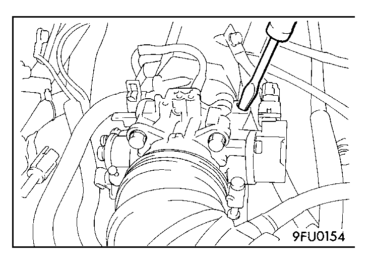

![[Previous]](https://mitsubishitechinfo.com/data/F24S/BUTTONS/fprevg.png)
![[Next]](https://mitsubishitechinfo.com/data/F24S/BUTTONS/fnextg.png)


BASIC IDLE SPEED ADJUSTMENT
NOTE
1.The standard idle speed has been adjusted, by the engine speed adjusting screw, by the manufacturer, and there should usually be no need for readjustment.
2.The adjustment, if made, should be made after first confirming that the spark plugs, the injectors, the idle air control servo, the compression pressure, etc., are all normal.
1.The vehicle should be prepared as follows before the inspection and adjustment.
•Engine coolant temperature: 80 - 95°C (176 - 203°F)
•Lights, cooling fan and accessories: OFF
•Transaxle: Neutral (A/T for P range)
2.Connect the scan tool to the data link connector (16-pin)
NOTE
When the scan tool is connected, the diagnostic test mode control terminal should be grounded.
3.Start the engine and run at idle.
4.Select the item No. 30 of the SCAN TOOL (MUT-II) Actuator test.
NOTE
This holds the IAC motor at the basic step to adjust the basic idle speed.
5.Check the idle speed.
Standard value: 750 ± 50 r/min
NOTE
1.The engine speed may be 20 to 100 r/min lower than indicated above for a new vehicle [driven approximately 500 km (300 mile) or less], but no adjustment is necessary.
2.If the engine stalls or the r/min is low even though the vehicle has been driven approximately 500 km (300 mile) or more, it is probable that deposits are adhered to the throttle valve, so clean it.
(Refer to  .)
.)
6.If not within the standard value range, turn the engine speed adjusting screw to make the necessary adjustment.
NOTE
If the idling speed is higher than the standard value range even when the engine speed adjusting screw is fully closed, check whether or not there is any indication that the fixed SAS has been moved. If there is an indication that it has been moved, adjust the fixed SAS. If there are no indications that it has been moved, it is possible that there is leakage as a result of deterioration of the fast idle air valve (FIAV), and, if so, the throttle body should be replaced.
7.Press the scan tool clear key, and release the IAC motor from the Actuator test mode.
NOTE
Unless the IAC motor is released, the Actuator test mode will continue 27 minutes.
8.Switch OFF the ignition switch.
9.Disconnect the scan tool.
10.Start the engine again and let it run at idle speed for about 10 minutes; check to be sure that the idling condition is normal.